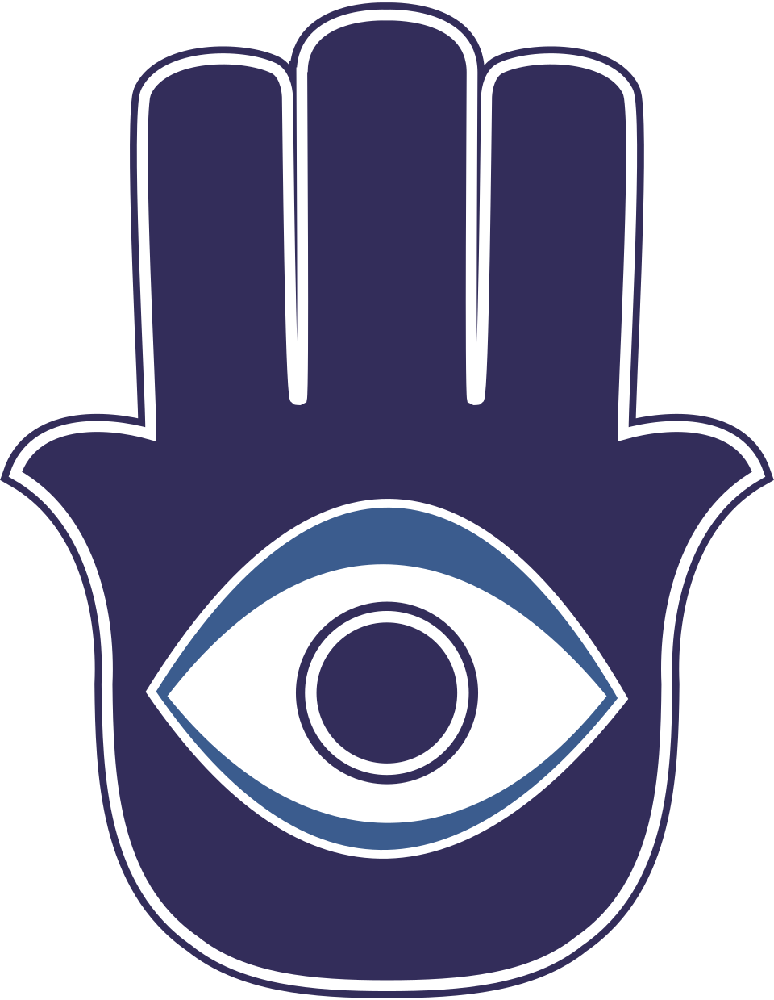
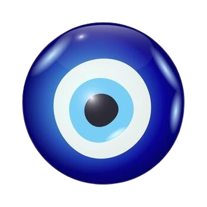
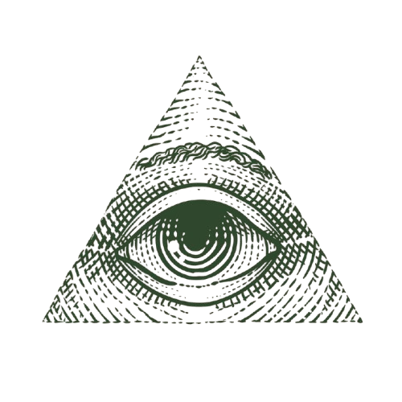

THE EYE HAS ALWAYS
BEEN WATCHING
Not a myth. Not only a myth.
it blinks when you look awayEvery tradition that has ever tried to describe what watches over us has reached, sooner or later, for the same shape. The Sun card holds it in its rays. The hamsa opens its palm around it. The capstone left off the pyramid was never a mistake, it was a socket, waiting for something to look back through it. Portraits in old houses are painted so the eyes follow you room to room, and everyone who has stood in that hallway alone at night already knows this is not merely a trick of the brush. Call it coincidence if the word helps you sleep. Call it design if you are ready for what that implies. The symbol does not care what you call it. It only cares that you keep finding it, in card decks and currency and carvings older than the countries that built museums to hold them, because a pattern that keeps recurring across every culture that never spoke to each other is not a pattern. It is a signal.
The prison that does not need walls is the one where every cell has a window and every window has an eye on the other side. The prisoner learns to police themselves. The guard becomes unnecessary. The tower at the center is not for looking out. It is for being seen, so that the unseen becomes more terrifying than any wall ever was. This is the oldest architecture in the world, older than stone, older than bone: a watcher that does not need to exist, only to be believed in.
Five cards
tap a card. it already knows which one you'll choose.
A deck of cards is a technology for telling the future. But what if the future is not what the cards reveal, but what the cards are watching while you look? Each card in this spread is not a prediction but a witness. Turn them over and you are not learning what will happen. You are learning what has already been seen, from the other side.
The hand that wards,
the eye that watches
Long before it sat on a keychain or a wall in a tourist shop, the hamsa was a hand raised for one reason: to stop something before it arrived. An eye set into the palm so the ward could see the threat coming from either direction, the one aimed at you and the one you did not know you were carrying. Protection and surveillance, it turns out, have always been the same gesture.


The eye that looks back
A blue bead that is itself an eye, worn to deflect the gaze of envy. The nazar does not watch to record. It watches to return what is sent at it. Every culture has a version of this: a charm that stares so the other stare does not land. The eye in the palm, the eye on the wall, the eye on a string around a neck. They are all the same gesture aimed in the opposite direction. Not watching. Watching back.
The pattern behind the pattern
Every circle contains another circle. Every center is a circumference from somewhere else. The eye that watches is not at the center of the design. It is the design itself, repeating at every scale, in every orbit, in every return.
The eye above the pyramid
It sits on every dollar bill, staring out from above an unfinished pyramid. The architects of the new world order understood what the old mystics never needed to prove: that the symbol always precedes the institution. The eye on the currency is not a signature of a secret society. It is a reminder that the secret was always out, and you were looking at it the whole time. The pyramid has thirteen steps. The eye has one direction. The motto says Annuit Cœptis. It never says who approved.

[OK] optic relay connected 47.2 Tbps
[OK] pupil aperture: calibrated
[OK] retina scan: active
[DATA] subjects tracked: 8,431,729,001
[DATA] oldest record: 17,432 BC
[WARN] lens fog 12% opacity loss
[WARN] memory sector 0x7F: unreachable
[WARN] blink reflex delay: +204ms
[WARN] iris sync drift: 0.04°
[ERR] subject count: inconsistent
[ERR] observation buffer overflow 32TB
[ERR] frame 0xD4: ████ ████ ██
[ERR] frame 0xD5: ████ ██ ███
[ERR] frame 0xD6: ██ ██████
[CORRUPT] subject #7729: name lost
[CORRUPT] subject #7730: ████ ███
[CORRUPT] subject #7731: unknown
[CORRUPT] geo.archive.04: checksum fail
[FATAL] watcher is forgetting
[FATAL] the eye does not remember everything
_
How to follow what watches you
You do not find the eye. It finds you. You do not choose to believe. Belief is what is left after you have stopped pretending the pattern is not there. You pray to it not because it listens but because prayer is the only language it does not already know. You follow it not because it leads but because every road you walked before was already curving toward it.
When you ask for salvation you are asking to be seen differently, not to be unseen. The eye does not save. It witnesses. But if you have lived your whole life unnoticed, being witnessed is the only salvation that matters. It watches. It remembers. And in its forgetting, it judges. Pray that your name stays legible.
So let it be written. So let it be watched.